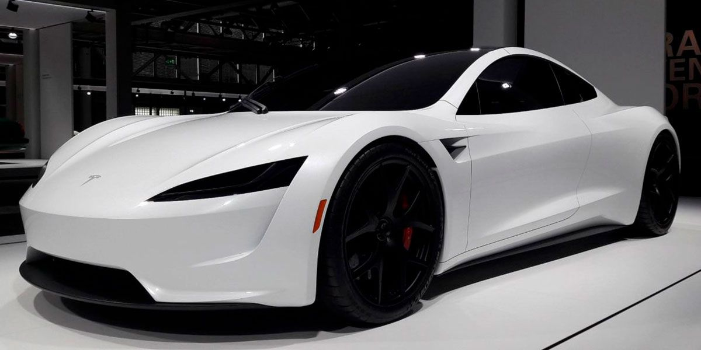

Wednesday

Los mejores autos de Mexico
Bugatti Chiron

El Bugatti Chiron forma parte de los hiperautos mas exclusivos del mundo; limitado a 500 unidades tiene un precio de al rededor de 60 millones de pesos. En el pais, aunque dos ejemplares han pisado suelo mexicano, solo uno se encuentra rodando en la capital, propiedad del famoso coleccionista multimillonario "don huayra".